Last updated: 2026-11-06
Live track record: 1129 closed picks, 33% win rate. Full track record →
| Ticker | Sector | Dir | Price | RSI(7) | % vs 20D | Volume | Entry | Stop | Target | R:R | Avg Hold | Probability | Hist. win rate | Sample | Earnings |
|---|---|---|---|---|---|---|---|---|---|---|---|---|---|---|---|
| FTNT | Information Technology | LONG | $120.24 | 15.7 | -25.6% | 0.7x | $120.24 | $114.22 | $161.61 | 6.88:1 | 8.0 | 50% | 73% | 11 | 90d |
| FIX | Industrials | LONG | $1010.87 | 28.8 | -23.5% | 0.99x | $1010.87 | $960.33 | $1320.96 | 6.14:1 | 6.7 | 28% | 58% | 12 | 104d |
| FFIV | Information Technology | LONG | $313.55 | 14.8 | -23.3% | 0.56x | $313.55 | $297.87 | $408.81 | 6.08:1 | 8.5 | 27% | 50% | 8 | 81d |
| MU | Information Technology | LONG | $690.26 | 26.6 | -21.5% | 1.17x | $690.26 | $655.75 | $879.0 | 5.47:1 | 9.0 | 34% | 64% | 11 | 47d |
| LRCX | Information Technology | LONG | $199.53 | 28.7 | -20.0% | 0.9x | $199.53 | $189.55 | $249.29 | 4.99:1 | 5.0 | 27% | 57% | 7 | 82d |
| ILMN | Health Care | LONG | $211.24 | 27.0 | -18.4% | 0.54x | $211.24 | $200.68 | $258.91 | 4.51:1 | 7.0 | 55% | 55% | 11 | 90d |
| FISV | Financials | SHORT | $63.81 | 91.8 | 25.2% | 0.79x | $63.81 | $67.0 | $50.97 | 4.02:1 | 8.6 | 41% | 71% | 7 | 96d |
| MPC | Energy | LONG | $372.15 | 17.3 | -16.7% | 0.56x | $372.15 | $353.55 | $446.67 | 4.0:1 | 10.4 | 73% | 73% | 11 | 88d |
| VLO | Energy | LONG | $346.68 | 21.6 | -15.5% | 0.49x | $346.68 | $329.35 | $410.46 | 3.68:1 | 10.4 | 71% | 71% | 7 | 83d |
| KEYS | Information Technology | LONG | $273.62 | 29.3 | -15.5% | 0.93x | $273.62 | $259.94 | $323.77 | 3.67:1 | 8.8 | 37% | 67% | 9 | 13d |
| KLAC | Information Technology | LONG | $137.01 | 32.8 | -14.1% | 0.56x | $137.01 | $130.16 | $159.55 | 3.29:1 | 4.0 | 32% | 62% | 8 | 83d |
| DVN | Energy | LONG | $42.31 | 16.0 | -14.0% | 1.24x | $42.31 | $40.19 | $49.19 | 3.26:1 | 8.0 | 74% | 82% | 11 | 102d |
| MOS | Materials | SHORT | $22.6 | 80.3 | 19.3% | 0.57x | $22.6 | $23.73 | $18.94 | 3.24:1 | 7.8 | 53% | 53% | 17 | 109d |
| JBL | Information Technology | LONG | $239.24 | 24.8 | -13.8% | 0.46x | $239.24 | $227.28 | $277.67 | 3.21:1 | 8.3 | 28% | 58% | 12 | 40d |
| GEV | Industrials | LONG | $769.16 | 29.8 | -13.0% | 1.46x | $769.16 | $730.7 | $883.92 | 2.98:1 | 8.6 | 28% | 58% | 12 | 82d |
| VST | Utilities | LONG | $124.78 | 38.8 | -12.7% | 1.2x | $124.78 | $118.54 | $142.91 | 2.91:1 | 9.0 | 24% | 54% | 13 | unknown |
| ROK | Industrials | LONG | $374.47 | 19.6 | -12.6% | 1.36x | $374.47 | $355.75 | $428.26 | 2.87:1 | 7.6 | 39% | 69% | 13 | 90d |
| CSCO | Information Technology | LONG | $94.08 | 19.6 | -11.9% | 0.67x | $94.08 | $89.38 | $106.81 | 2.7:1 | 7.0 | 37% | 67% | 6 | 6d |
| IDXX | Health Care | SHORT | $675.23 | 71.5 | 15.6% | 0.37x | $675.23 | $708.99 | $584.24 | 2.69:1 | 8.7 | 34% | 64% | 11 | 87d |
| AVGO | Information Technology | LONG | $292.91 | 25.9 | -11.8% | 0.88x | $292.91 | $278.26 | $332.09 | 2.67:1 | 5.6 | 20% | 50% | 16 | 33d |
| PSX | Energy | LONG | $246.32 | 22.0 | -11.7% | 0.52x | $246.32 | $234.0 | $279.04 | 2.66:1 | 11.6 | 70% | 70% | 10 | 89d |
| NVDA | Information Technology | LONG | $187.52 | 28.1 | -11.4% | 1.13x | $187.52 | $178.14 | $211.59 | 2.57:1 | 7.4 | 41% | 71% | 14 | 11d |
| NWSA | Communication Services | LONG | $26.36 | 25.0 | -11.1% | 0.99x | $26.36 | $25.04 | $29.64 | 2.49:1 | 7.7 | 41% | 64% | 14 | 90d |
| PNR | Industrials | SHORT | $68.17 | 65.7 | 14.0% | 0.25x | $68.17 | $71.58 | $59.77 | 2.46:1 | 13.5 | 43% | 50% | 4 | 88d |
| GEN | Information Technology | SHORT | $29.79 | 70.2 | 14.0% | 0.44x | $29.79 | $31.28 | $26.14 | 2.45:1 | 7.6 | 46% | 54% | 13 | 90d |
| ETN | Industrials | LONG | $341.33 | 35.9 | -10.8% | 0.95x | $341.33 | $324.27 | $382.6 | 2.42:1 | 11.8 | 33% | 63% | 19 | 88d |
| CLX | Consumer Staples | SHORT | $100.0 | 87.5 | 13.3% | 0.41x | $100.0 | $104.99 | $88.26 | 2.35:1 | 9.9 | 67% | 82% | 11 | 88d |
| NWS | Communication Services | LONG | $29.06 | 27.3 | -10.4% | 1.29x | $29.06 | $27.6 | $32.44 | 2.33:1 | 6.6 | 44% | 67% | 15 | 90d |
| GOOGL | Communication Services | LONG | $285.49 | 31.3 | -10.1% | 0.61x | $285.49 | $271.22 | $317.48 | 2.24:1 | 8.3 | 35% | 50% | 14 | 89d |
| PWR | Industrials | LONG | $546.43 | 39.1 | -10.1% | 1.11x | $546.43 | $519.11 | $607.62 | 2.24:1 | 6.7 | 43% | 58% | 12 | 104d |
| CMG | Consumer Discretionary | SHORT | $34.6 | 72.7 | 12.6% | 0.4x | $34.6 | $36.32 | $30.73 | 2.23:1 | 9.7 | 60% | 68% | 19 | 95d |
| GEHC | Health Care | SHORT | $82.95 | 73.9 | 12.0% | 0.49x | $82.95 | $87.1 | $74.05 | 2.15:1 | 8.6 | 45% | 75% | 16 | 89d |
| GOOG | Communication Services | LONG | $284.24 | 31.1 | -9.7% | 0.62x | $284.24 | $270.03 | $314.63 | 2.14:1 | 7.0 | 35% | 50% | 14 | 89d |
| TT | Industrials | LONG | $401.58 | 30.6 | -9.5% | 0.58x | $401.58 | $381.51 | $443.78 | 2.1:1 | 11.2 | 29% | 59% | 17 | 83d |
| ADI | Information Technology | LONG | $365.65 | 28.4 | -9.4% | 0.78x | $365.65 | $347.37 | $403.78 | 2.09:1 | 8.0 | 65% | 73% | 11 | 18d |
| WMB | Energy | LONG | $64.64 | 25.8 | -9.4% | 0.54x | $64.64 | $61.41 | $71.38 | 2.09:1 | 9.5 | 77% | 100% | 10 | 95d |
| GPN | Financials | SHORT | $97.64 | 70.6 | 11.6% | 0.62x | $97.64 | $102.52 | $87.5 | 2.08:1 | 10.1 | 56% | 71% | 14 | 103d |
| ABNB | Consumer Discretionary | SHORT | $191.31 | 73.1 | 11.5% | 2.01x 🔥 | $191.31 | $200.88 | $171.53 | 2.07:1 | 6.2 | 42% | 57% | 14 | 97d |
| AKAM | Information Technology | LONG | $83.09 | 35.4 | -9.4% | 1.34x | $83.09 | $78.94 | $91.68 | 2.07:1 | 10.8 | 39% | 69% | 16 | 104d |
| ADM | Consumer Staples | LONG | $70.67 | 16.6 | -9.3% | 0.56x | $70.67 | $67.14 | $77.95 | 2.06:1 | 8.4 | 70% | 100% | 7 | 88d |
| TRGP | Energy | LONG | $266.13 | 25.1 | -9.2% | 1.1x | $266.13 | $252.82 | $293.25 | 2.04:1 | 10.4 | 70% | 70% | 10 | 104d |
| FANG | Energy | LONG | $180.25 | 24.9 | -9.2% | 0.44x | $180.25 | $171.24 | $198.54 | 2.03:1 | 8.8 | 32% | 62% | 16 | 108d |
| ROP | Information Technology | SHORT | $477.2 | 68.5 | 11.3% | 0.5x | $477.2 | $501.07 | $428.69 | 2.03:1 | 7.2 | 20% | 50% | 10 | 81d |
LONG = oversold, expected to bounce back up toward the 20-day average. SHORT = overbought, expected to pull back down toward the 20-day average. Stop-loss = 5% against the position. Probability = this ticker's historical win rate minus penalties when the chart structure is broken (hover for reasons). 🔥 means volume was 1.5x+ the 20-day average. Tickers with earnings due within 3 days are excluded. Macro events pulled live from a public economic calendar feed (high-impact USD events only). Mechanical screen only — check news before acting. Not financial advice.
Probability 73% → 50%: broke below 60d swing low (-15); below 200-day avg, downtrend (-8)
Earlier signals on FTNT: 2026-11-04: ❌ hit stop -5.0% 2026-11-03: ❌ hit stop -5.0% 2026-11-02: ❌ hit stop -5.0%
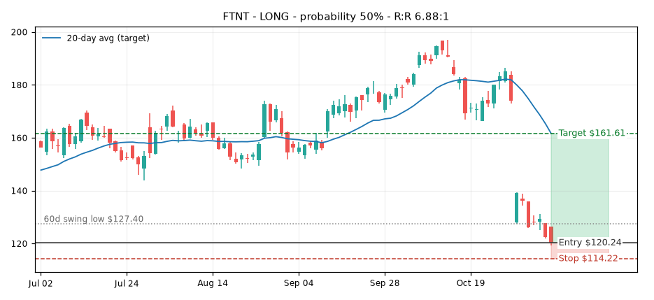
Probability 58% → 28%: broke below 60d swing low (-15); below 200-day avg, downtrend (-8); lower highs and lower lows (-7)
Earlier signals on FIX: 2026-11-05: ⏳ still open 2026-11-04: ❌ hit stop -5.0% 2026-11-03: ❌ hit stop -12.6%
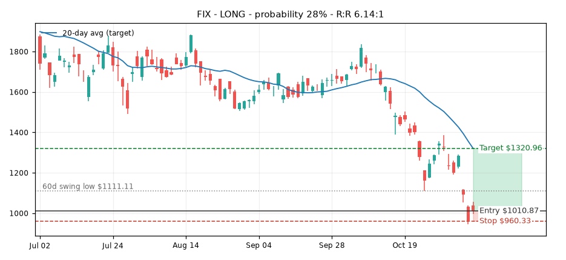
Probability 50% → 27%: broke below 60d swing low (-15); below 200-day avg, downtrend (-8)
Earlier signals on FFIV: 2026-11-04: ❌ hit stop -5.0% 2026-11-03: ❌ hit stop -5.0% 2026-11-02: ❌ hit stop -5.0%
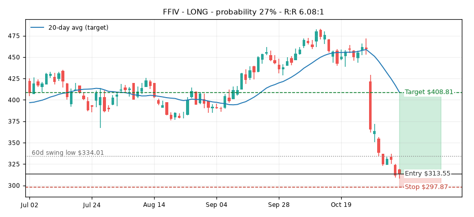
Probability 64% → 34%: broke below 60d swing low (-15); below 200-day avg, downtrend (-8); lower highs and lower lows (-7)
Earlier signals on MU: 2026-11-05: ⏳ still open 2026-11-04: ❌ hit stop -5.6% 2026-11-02: ❌ hit stop -5.0%
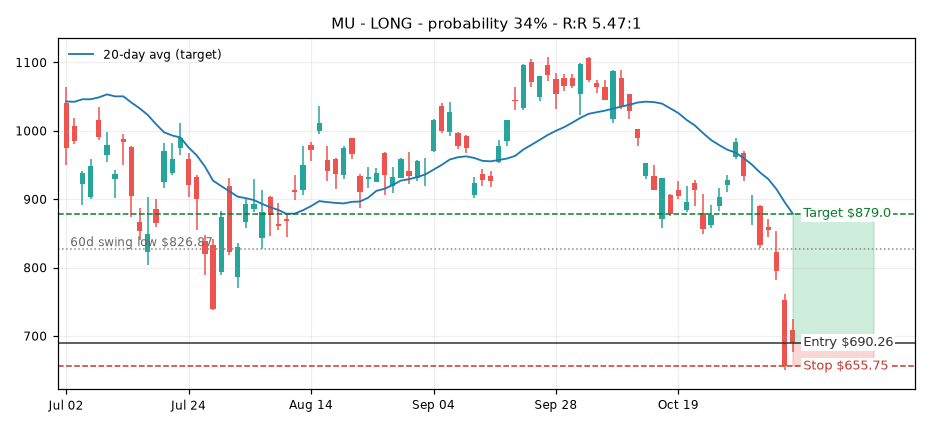
Probability 57% → 27%: broke below 60d swing low (-15); below 200-day avg, downtrend (-8); lower highs and lower lows (-7)
Earlier signals on LRCX: 2026-11-05: ⏳ still open 2026-11-04: ❌ hit stop -5.6% 2026-11-03: ❌ hit stop -9.1%
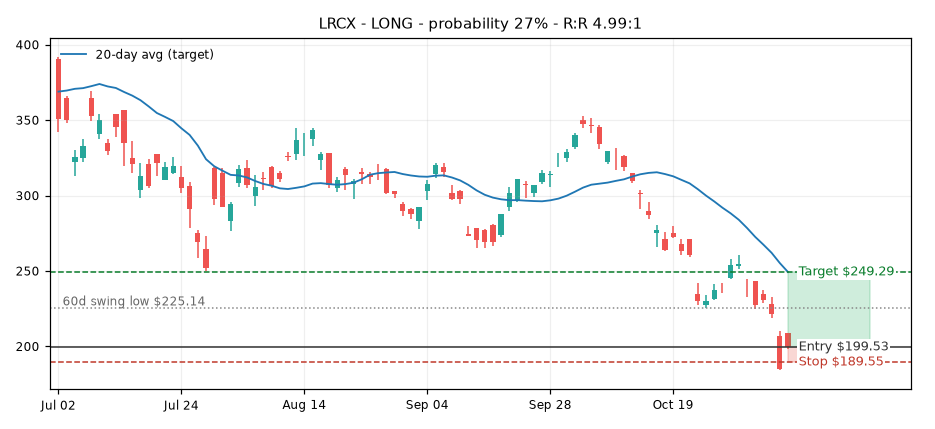
Probability 55%: no structure warnings.
Earlier signals on ILMN: 2026-11-05: ⏳ still open 2026-11-04: ❌ hit stop -5.0% 2026-11-03: ❌ hit stop -5.0%
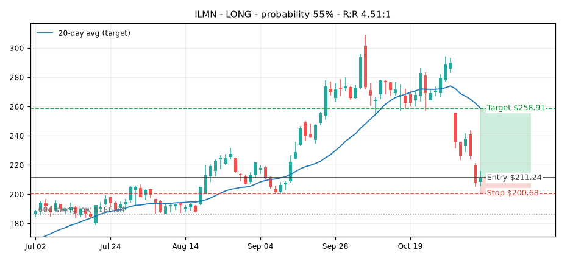
Probability 71% → 41%: broke above 60d swing high (-15); above 200-day avg, uptrend (-8); higher highs and higher lows (-7)
Earlier signals on FISV: 2026-11-04: ⏳ still open 2026-11-03: ❌ hit stop -5.0%
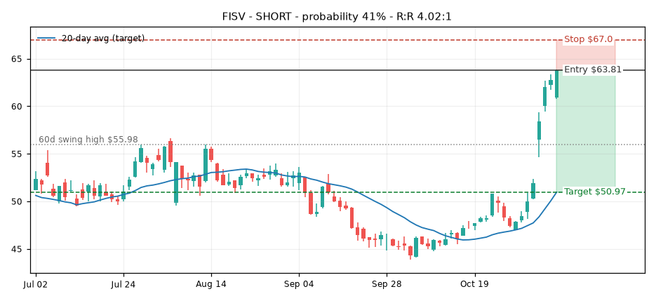
Probability 73%: no structure warnings.
Earlier signals on MPC: 2026-11-04: ⏳ still open 2026-08-25: ❌ hit stop -5.5% 2026-08-24: ❌ hit stop -5.6%
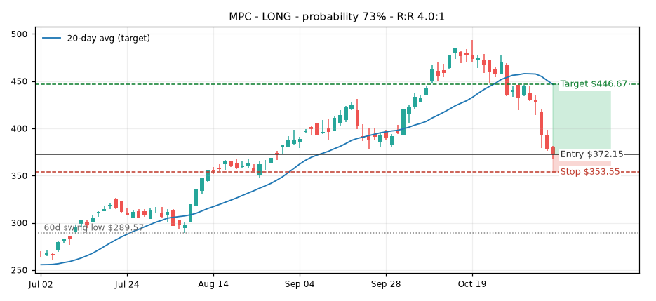
Probability 71%: no structure warnings.
Earlier signals on VLO: 2026-11-04: ❌ hit stop -5.0% 2026-11-02: ❌ hit stop -5.0% 2026-10-29: ❌ hit stop -5.0%
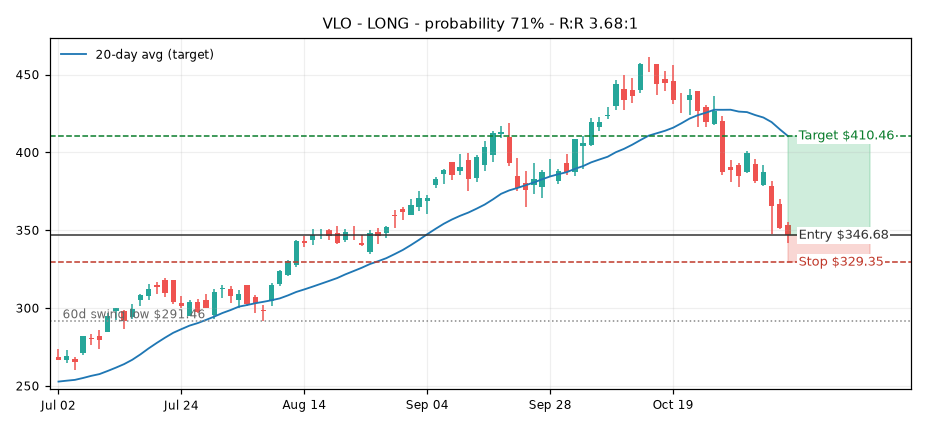
Probability 67% → 37%: broke below 60d swing low (-15); below 200-day avg, downtrend (-8); lower highs and lower lows (-7)
Earlier signals on KEYS: 2026-11-05: ⏳ still open 2026-11-04: ❌ hit stop -5.0% 2026-11-03: ❌ hit stop -5.0%
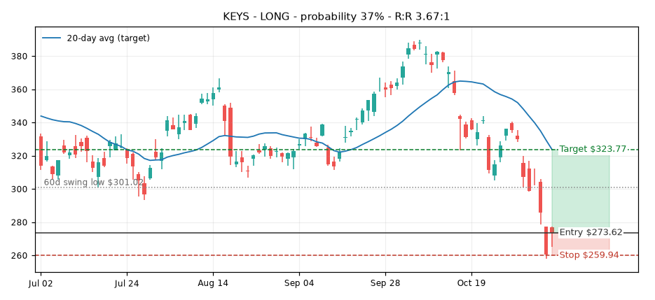
Probability 62% → 32%: broke below 60d swing low (-15); below 200-day avg, downtrend (-8); lower highs and lower lows (-7)
Earlier signals on KLAC: 2026-11-05: ⏳ still open 2026-11-04: ❌ hit stop -5.0% 2026-11-02: ❌ hit stop -7.2%
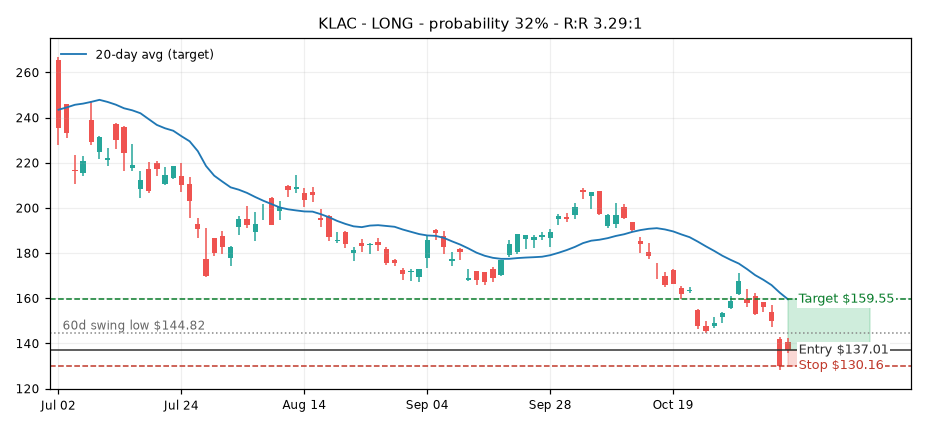
Probability 82% → 74%: below 200-day avg, downtrend (-8)
Earlier signals on DVN: 2026-08-24: ❌ hit stop -5.0% 2026-08-24: ❌ hit stop -5.4%
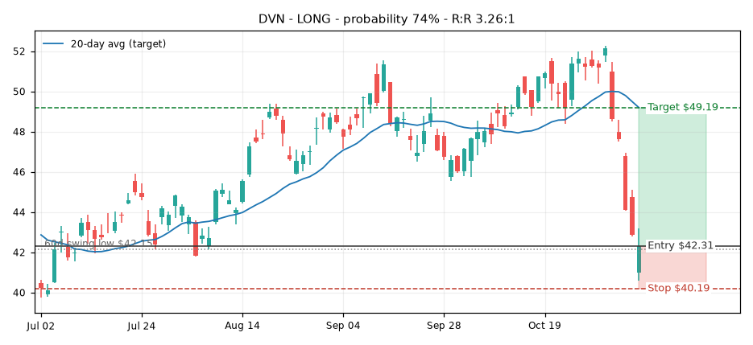
Probability 53%: no structure warnings.
Earlier signals on MOS: 2026-11-05: ⏳ still open 2026-11-04: ❌ hit stop -5.0% 2026-10-23: ✅ hit target +12.7%
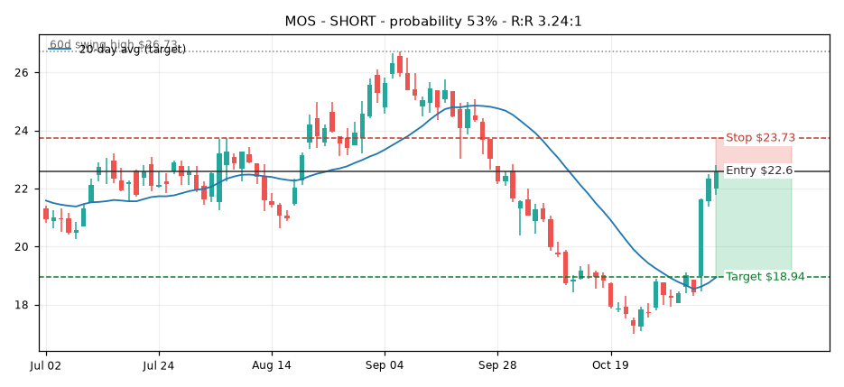
Probability 58% → 28%: broke below 60d swing low (-15); below 200-day avg, downtrend (-8); lower highs and lower lows (-7)
Earlier signals on JBL: 2026-11-05: ⏳ still open 2026-11-04: ❌ hit stop -5.0% 2026-10-22: ❌ hit stop -5.0%
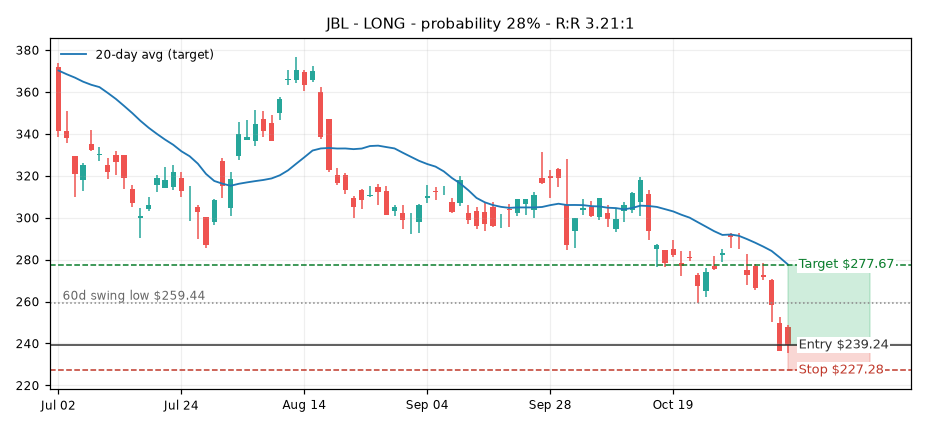
Probability 58% → 28%: broke below 60d swing low (-15); below 200-day avg, downtrend (-8); lower highs and lower lows (-7)
Earlier signals on GEV: 2026-11-05: ⏳ still open 2026-10-23: ❌ hit stop -5.0% 2026-10-22: ❌ hit stop -5.0%
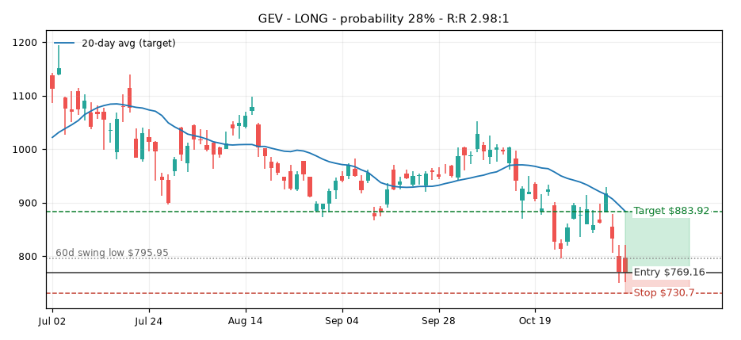
Probability 54% → 24%: broke below 60d swing low (-15); below 200-day avg, downtrend (-8); lower highs and lower lows (-7)
Earlier signals on VST: 2026-11-02: ❌ hit stop -6.8% 2026-10-30: ❌ hit stop -8.1% 2026-08-24: ✅ hit target +6.5%
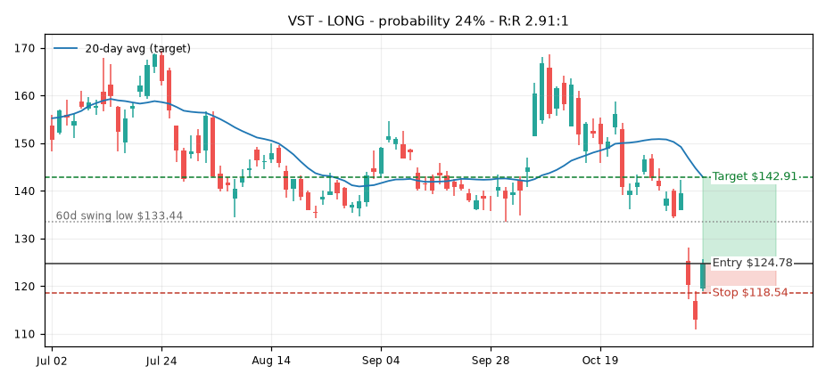
Probability 69% → 39%: broke below 60d swing low (-15); below 200-day avg, downtrend (-8); lower highs and lower lows (-7)
Earlier signals on ROK: 2026-11-05: ⏳ still open
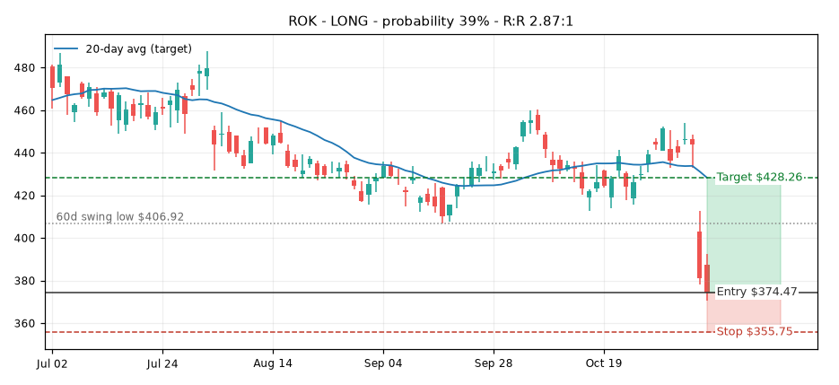
Probability 67% → 37%: broke below 60d swing low (-15); below 200-day avg, downtrend (-8); lower highs and lower lows (-7)
Earlier signals on CSCO: 2026-11-05: ⏳ still open
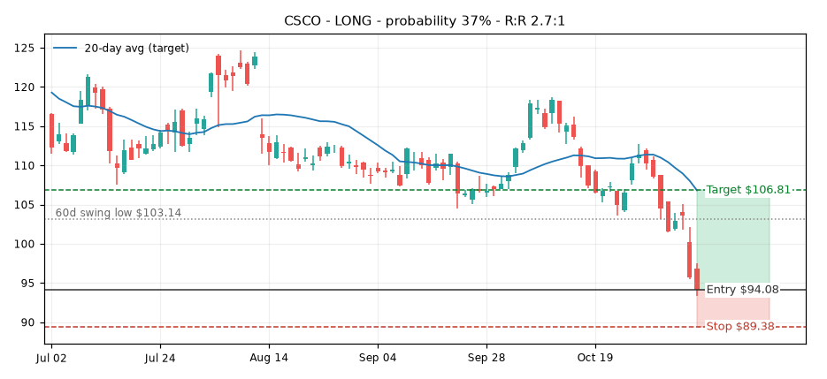
Probability 64% → 34%: broke above 60d swing high (-15); above 200-day avg, uptrend (-8); higher highs and higher lows (-7)
Earlier signals on IDXX: 2026-11-04: ⏳ still open 2026-11-03: ❌ hit stop -5.0% 2026-11-02: ❌ hit stop -5.0%
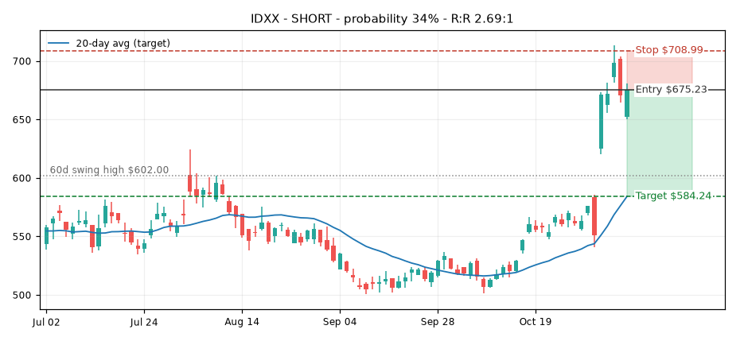
Probability 50% → 20%: broke below 60d swing low (-15); below 200-day avg, downtrend (-8); lower highs and lower lows (-7)
Earlier signals on AVGO: 2026-11-05: ⏳ still open 2026-08-27: ❌ hit stop -5.0% 2026-08-25: ❌ hit stop -5.0%
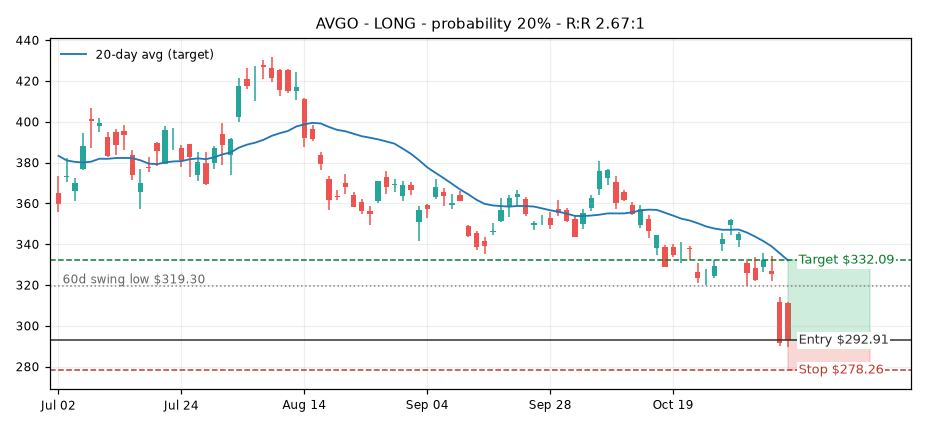
Probability 70%: no structure warnings.
Earlier signals on PSX: 2026-11-05: ⏳ still open 2026-08-25: ❌ hit stop -5.0% 2026-08-24: ❌ hit stop -5.0%
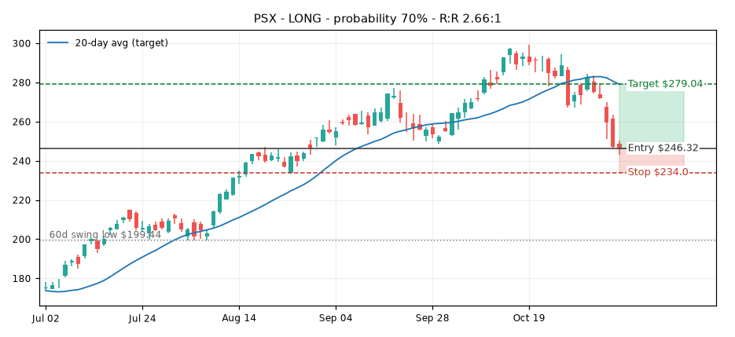
Probability 71% → 41%: broke below 60d swing low (-15); below 200-day avg, downtrend (-8); lower highs and lower lows (-7)
Earlier signals on NVDA: 2026-11-05: ⏳ still open
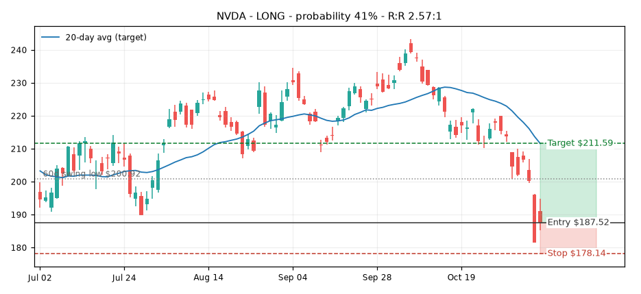
Probability 64% → 41%: broke below 60d swing low (-15); below 200-day avg, downtrend (-8)
Earlier signals on NWSA: 2026-11-05: ⏳ still open 2026-08-25: ✅ hit target +6.0% 2026-08-24: ⌛ expired +3.7%
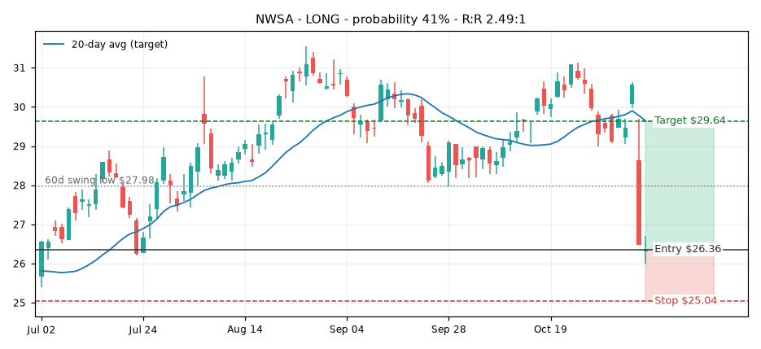
Probability 50% → 43%: higher highs and higher lows (-7)
Earlier signals on PNR: 2026-11-04: ⏳ still open 2026-11-03: ❌ hit stop -5.0% 2026-11-02: ⏳ still open
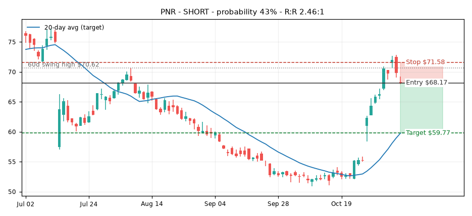
Probability 54% → 46%: above 200-day avg, uptrend (-8)
Earlier signals on GEN: 2026-11-04: ⏳ still open 2026-11-03: ⏳ still open 2026-11-02: ⏳ still open
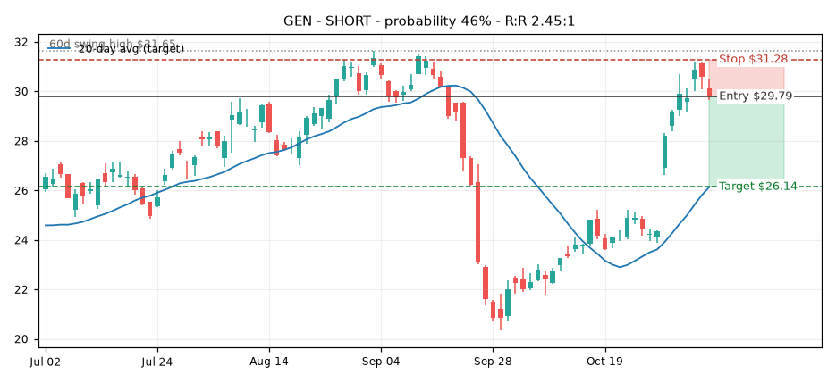
Probability 63% → 33%: broke below 60d swing low (-15); below 200-day avg, downtrend (-8); lower highs and lower lows (-7)
Earlier signals on ETN: 2026-11-05: ⏳ still open 2026-11-04: ❌ hit stop -5.0% 2026-10-23: ❌ hit stop -7.7%
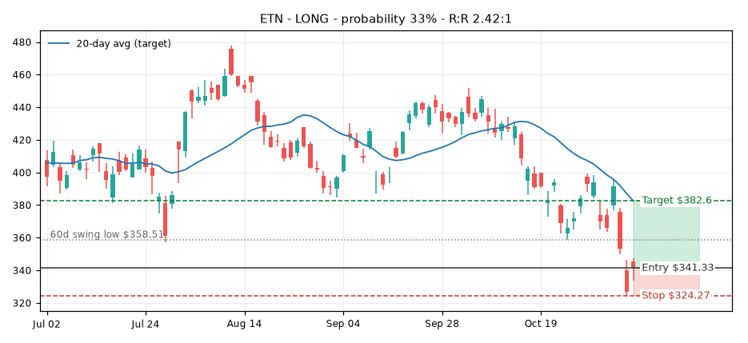
Probability 82% → 67%: above 200-day avg, uptrend (-8); higher highs and higher lows (-7)
Earlier signals on CLX: 2026-11-04: ⏳ still open 2026-09-08: ❌ hit stop -5.0% 2026-09-07: ❌ hit stop -5.0%
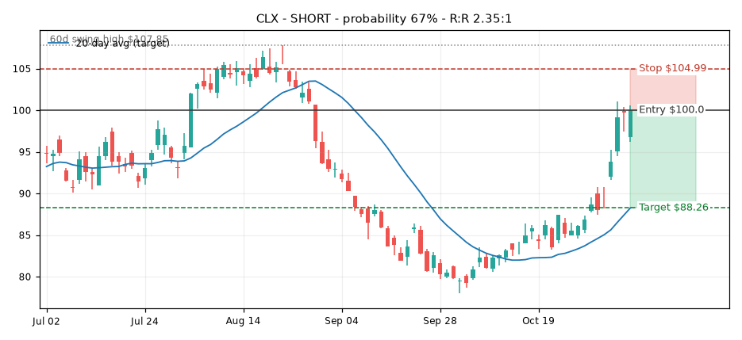
Probability 67% → 44%: broke below 60d swing low (-15); below 200-day avg, downtrend (-8)
Earlier signals on NWS: 2026-11-05: ⏳ still open 2026-08-25: ✅ hit target +5.9% 2026-08-24: ✅ hit target +5.3%
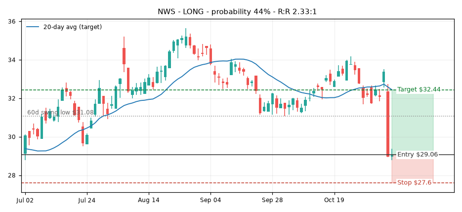
Probability 50% → 35%: below 200-day avg, downtrend (-8); lower highs and lower lows (-7)
Earlier signals on GOOGL: 2026-11-04: ⏳ still open 2026-11-03: ⏳ still open 2026-11-02: ⏳ still open
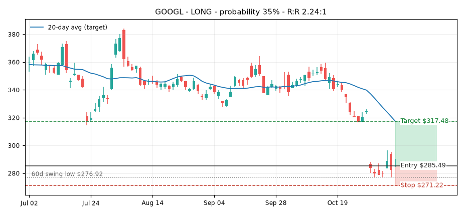
Probability 58% → 43%: below 200-day avg, downtrend (-8); lower highs and lower lows (-7)
Earlier signals on PWR: 2026-11-05: ⏳ still open 2026-10-23: ✅ hit target +17.7% 2026-10-22: ✅ hit target +18.2%
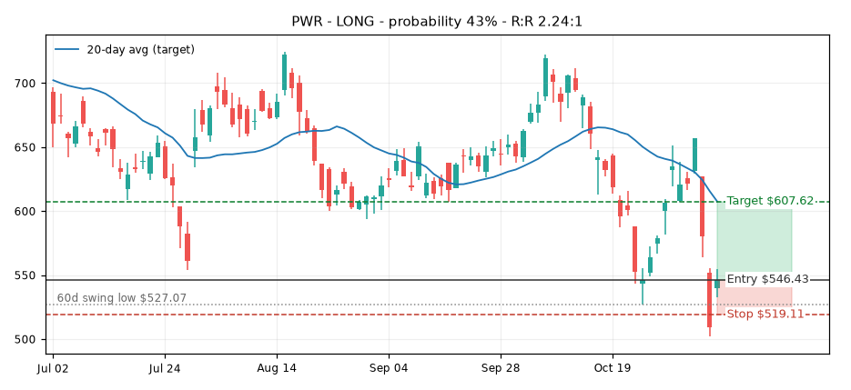
Probability 68% → 60%: above 200-day avg, uptrend (-8)
Earlier signals on CMG: 2026-11-04: ⏳ still open 2026-08-25: ✅ hit target +7.2% 2026-08-24: ❌ hit stop -5.0%
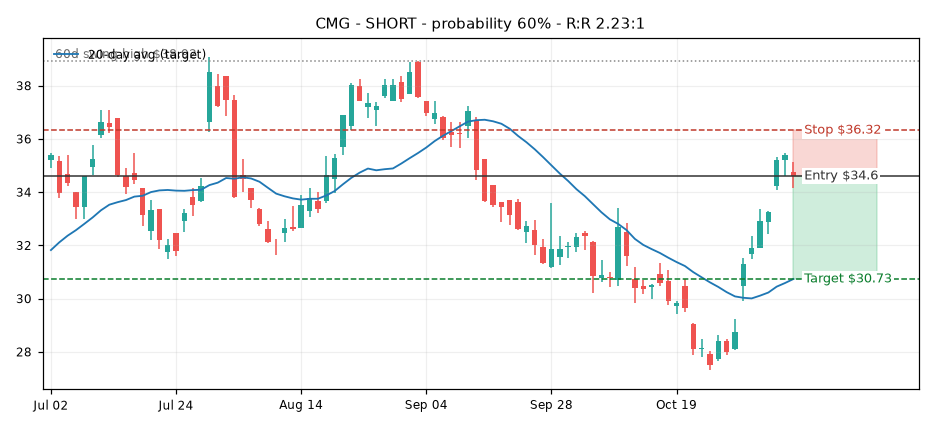
Probability 75% → 45%: broke above 60d swing high (-15); above 200-day avg, uptrend (-8); higher highs and higher lows (-7)
Earlier signals on GEHC: 2026-11-04: ⏳ still open 2026-11-03: ❌ hit stop -5.0% 2026-11-02: ❌ hit stop -5.0%
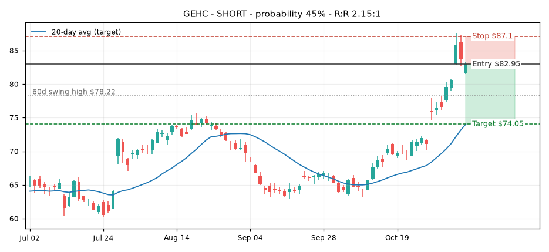
Probability 50% → 35%: below 200-day avg, downtrend (-8); lower highs and lower lows (-7)
Earlier signals on GOOG: 2026-11-04: ⏳ still open 2026-11-03: ⏳ still open 2026-11-02: ⏳ still open
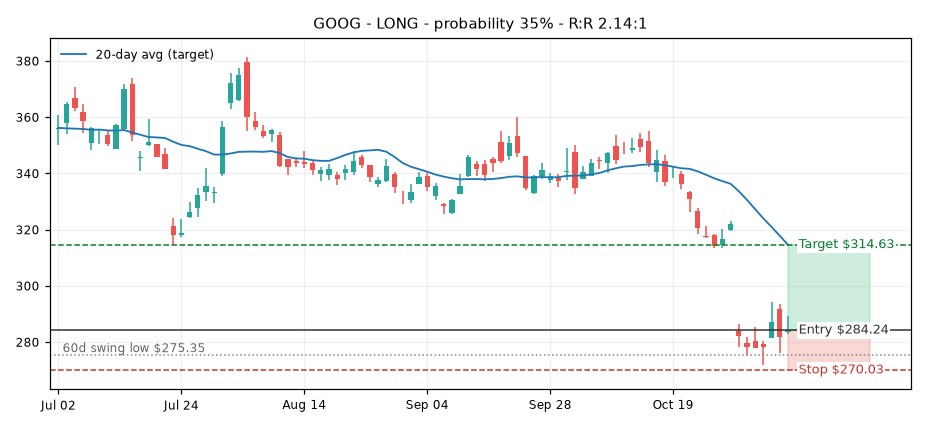
Probability 59% → 29%: broke below 60d swing low (-15); below 200-day avg, downtrend (-8); lower highs and lower lows (-7)
Earlier signals on TT: 2026-11-02: ❌ hit stop -5.0% 2026-10-30: ⏳ still open
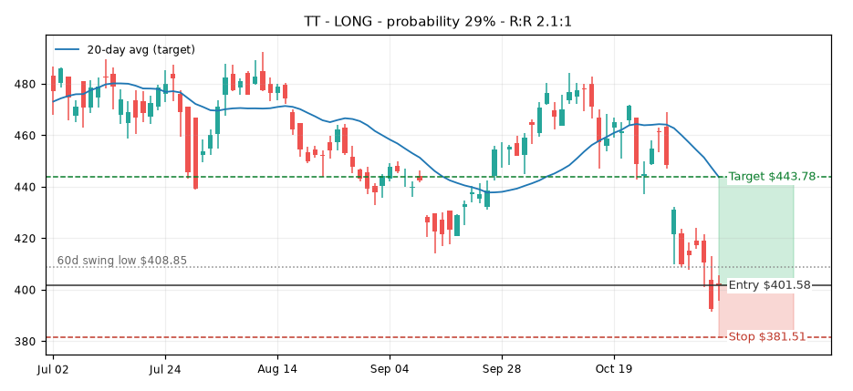
Probability 73% → 65%: below 200-day avg, downtrend (-8)
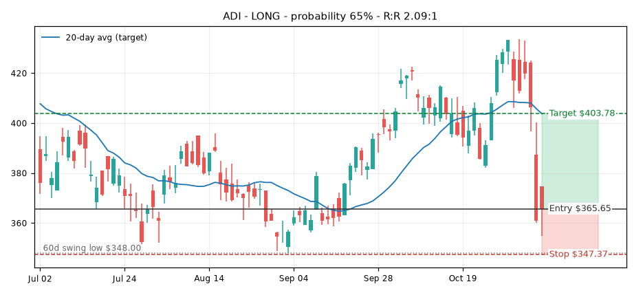
Probability 100% → 77%: broke below 60d swing low (-15); below 200-day avg, downtrend (-8)
Earlier signals on WMB: 2026-11-05: ⏳ still open
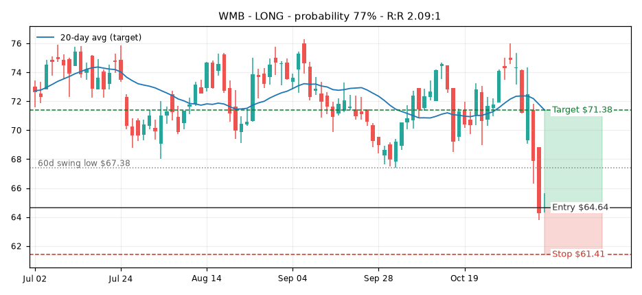
Probability 71% → 56%: above 200-day avg, uptrend (-8); higher highs and higher lows (-7)
Earlier signals on GPN: 2026-10-30: ⏳ still open 2026-08-24: ✅ hit target +5.4%
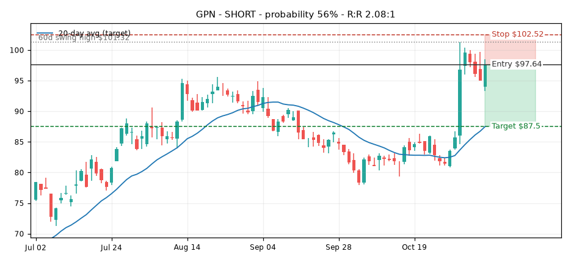
Probability 57% → 42%: above 200-day avg, uptrend (-8); higher highs and higher lows (-7)
Earlier signals on ABNB: 2026-08-25: ✅ hit target +9.2% 2026-08-24: ✅ hit target +9.8% 2026-08-24: ✅ hit target +10.0%
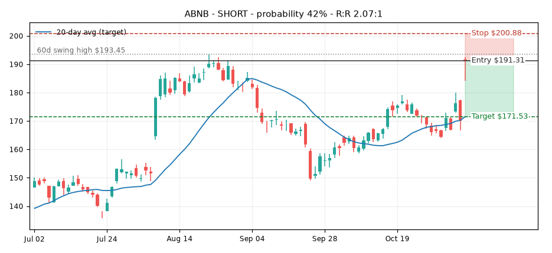
Probability 69% → 39%: broke below 60d swing low (-15); below 200-day avg, downtrend (-8); lower highs and lower lows (-7)
Earlier signals on AKAM: 2026-10-22: ❌ hit stop -5.0% 2026-10-21: ❌ hit stop -5.0% 2026-10-20: ❌ hit stop -5.0%
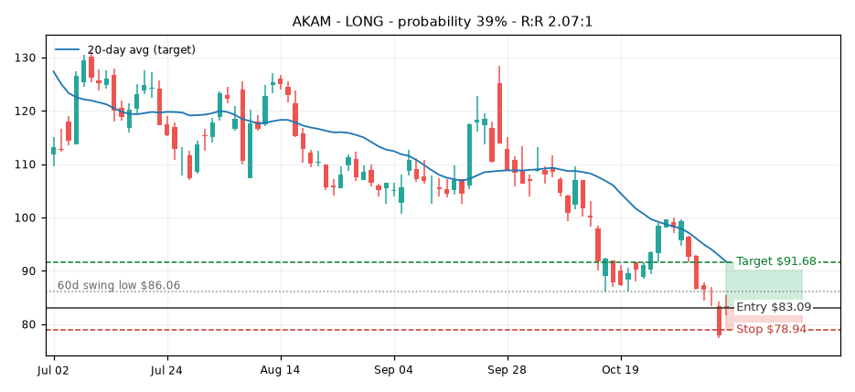
Probability 100% → 70%: broke below 60d swing low (-15); below 200-day avg, downtrend (-8); lower highs and lower lows (-7)
Earlier signals on ADM: 2026-11-04: ⏳ still open 2026-11-03: ⏳ still open
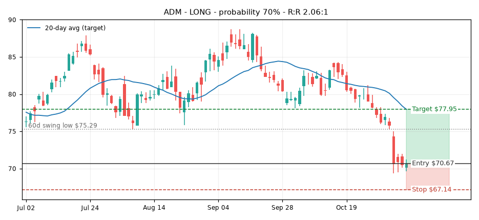
Probability 70%: no structure warnings.
Earlier signals on TRGP: 2026-08-24: ⌛ expired +6.0% 2026-08-24: ⌛ expired +4.5%
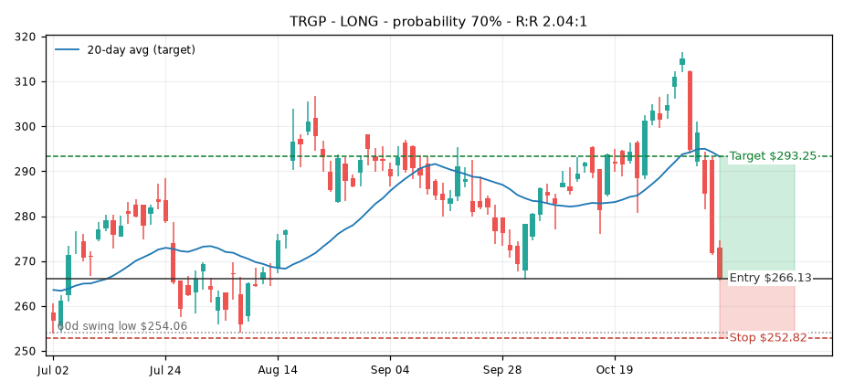
Probability 62% → 32%: broke below 60d swing low (-15); below 200-day avg, downtrend (-8); lower highs and lower lows (-7)
Earlier signals on FANG: 2026-08-24: ✅ hit target +5.6%
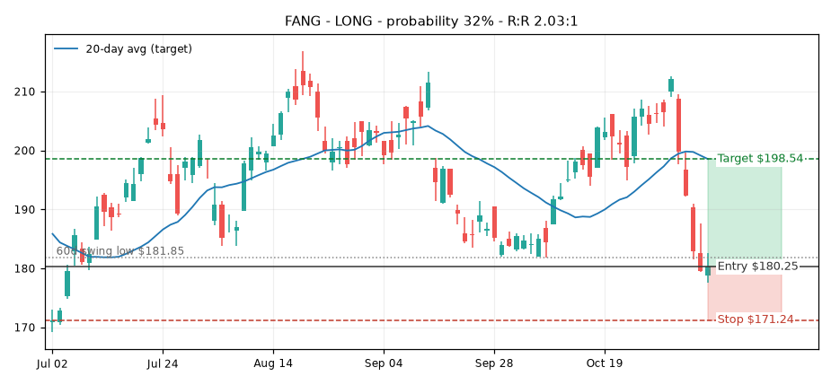
Probability 50% → 20%: broke above 60d swing high (-15); above 200-day avg, uptrend (-8); higher highs and higher lows (-7)
Earlier signals on ROP: 2026-11-04: ⏳ still open 2026-11-03: ❌ hit stop -5.5% 2026-11-02: ❌ hit stop -5.0%
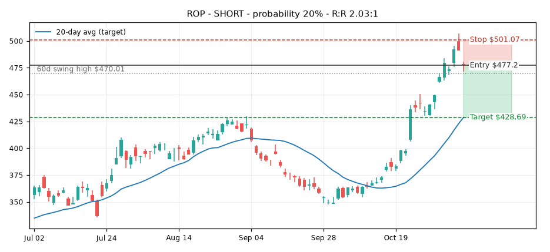